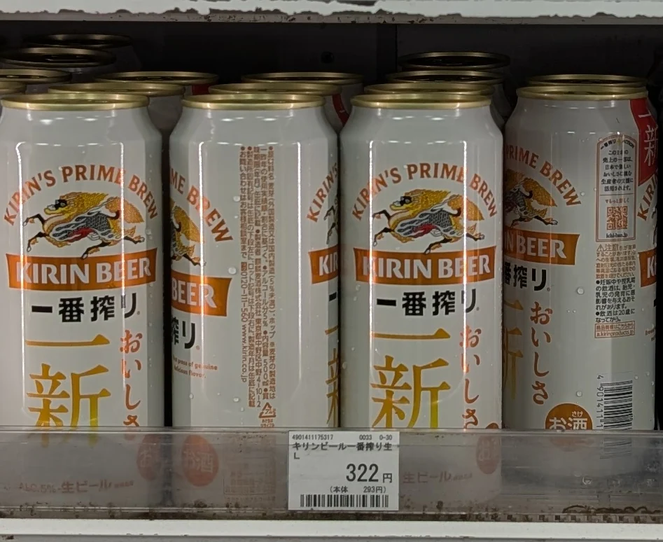
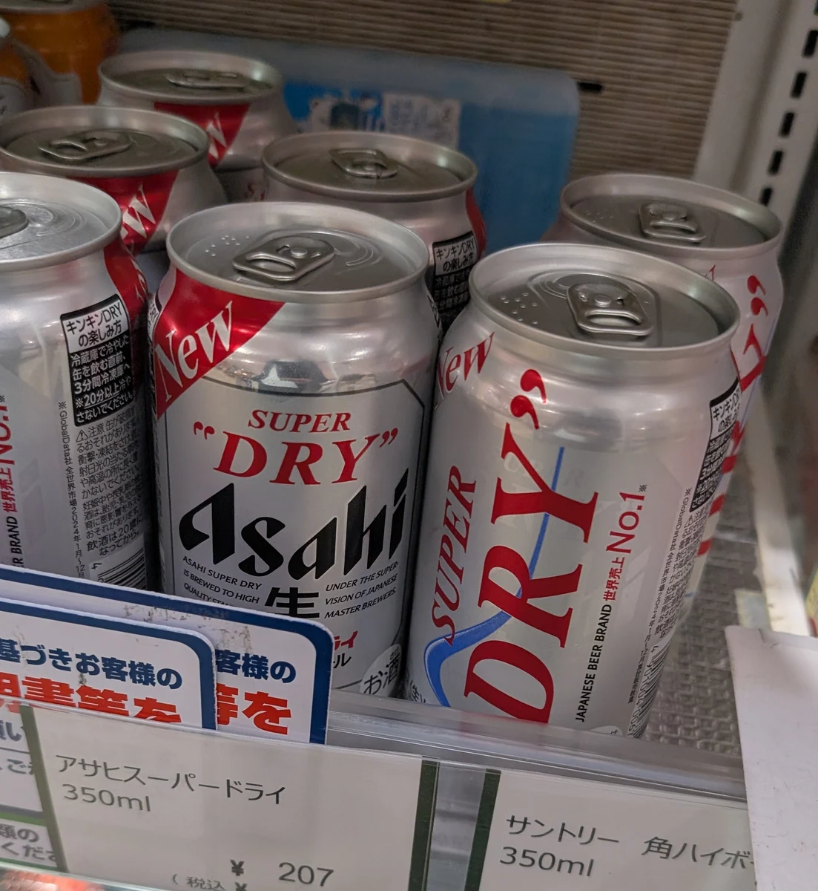
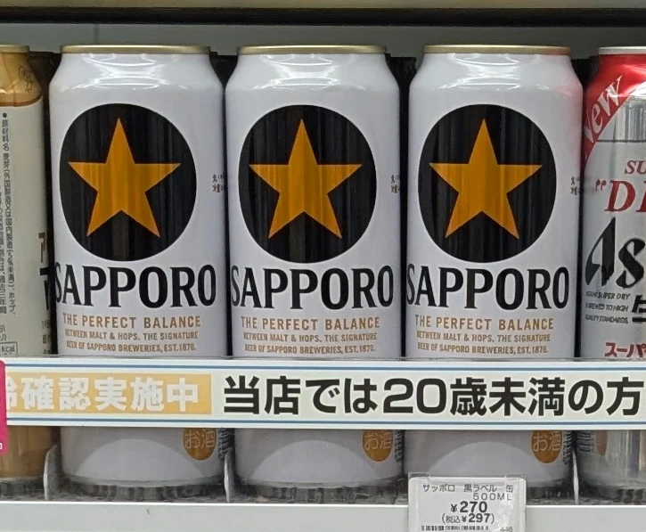
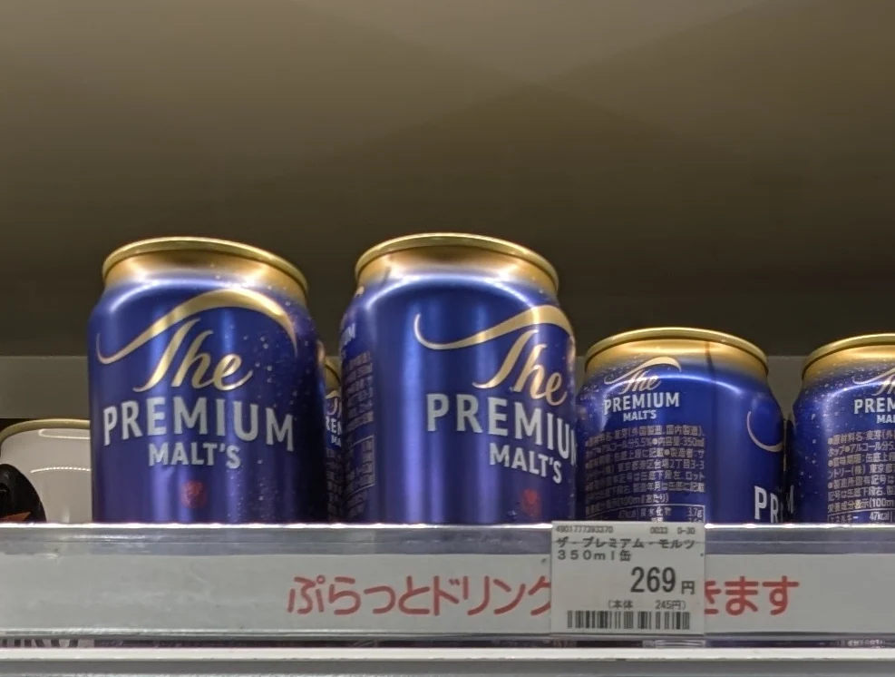
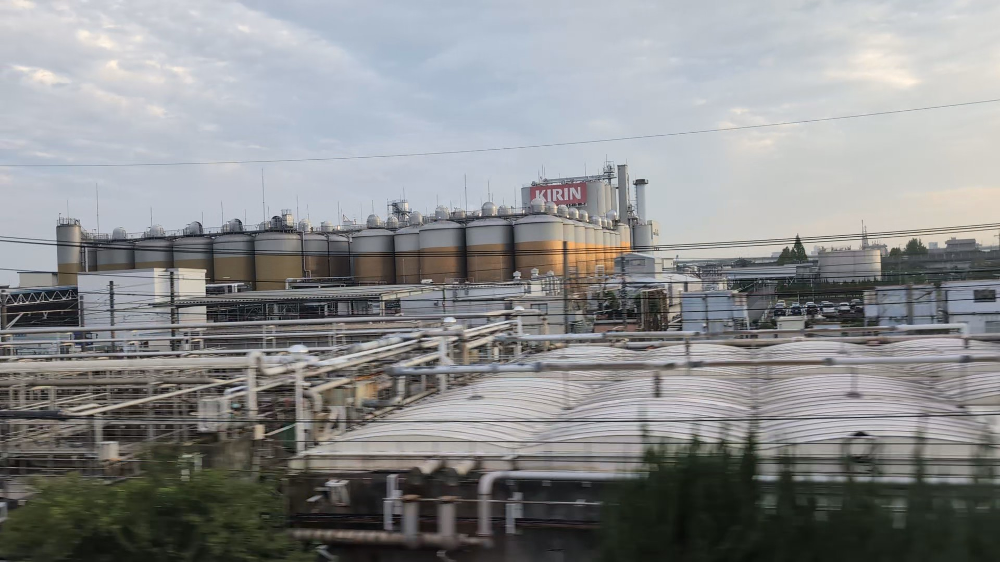
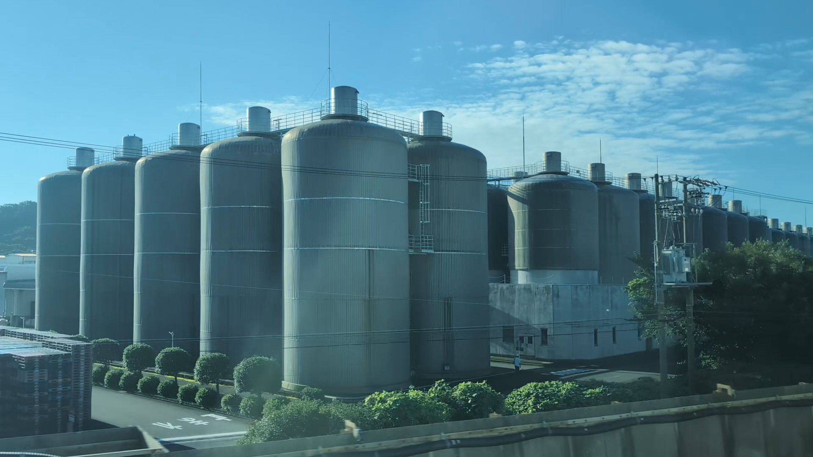
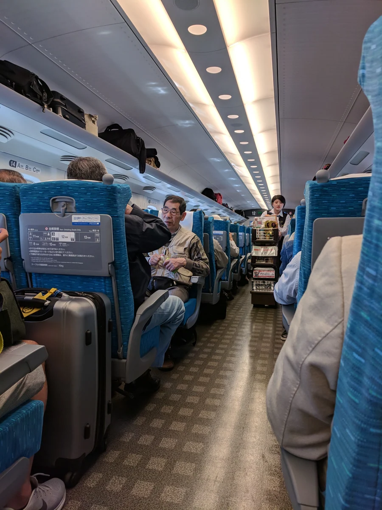

A SMALL PLEASURE OF THE JOURNEY
Make the ride part of the holiday.
You have bought a station bento, found your seat and put your bags away. Outside, the city gives way to fields. A beer can be a small way to settle into the journey — and to get a taste of daily life in Japan.
Beer became part of modern Japan as breweries grew in the late 1800s, from Yokohama to Hokkaido. Today, you can begin with an ordinary cold can. Learn what makes it interesting, then look outside: Kirin and Sapporo have breweries beside the Tokaido Shinkansen.
01 / GET TO KNOW JAPANESE BEER
Golden lagers, with different ideas of refreshment.
The familiar cans from Kirin, Asahi, Sapporo and Suntory are a good place to begin. Here is what to notice beyond the name.
What makes the everyday beer distinctive?
Japan’s big breweries are especially associated with pilsner-style lagers: golden beers with a refreshing character that sits easily beside food. That is a useful starting point, rather than a description of every beer made in Japan.
Within this family, small differences matter. Malt gives grain-like flavour and body; hops contribute bitterness and aroma. A “dry” finish fades quickly, while a fuller beer may leave more flavour after the sip. These are clues you can enjoy with a bento, without needing a tasting vocabulary.
Begin with the kind of finish you like. The four cans below offer different approaches to malt, aroma and refreshment. Their tasting prompts are invitations to notice something for yourself.
Background: Japanese beer · JNTO · Super Dry ingredients (Japanese) · Black Label ingredients (Japanese)

KIRIN · Malt-led & rounded
Ichiban Shibori
一番搾り
“Ichiban shibori” means first pressing. Kirin uses only the first wort — the liquid drawn from the malt mash before fermentation — for this all-malt beer. The name describes a brewing choice, not a beer style.
On your journey. If malt flavour appeals to you, start here. Take a sip before your first bite and notice the grain-like character.
On the shelf. Look for the big 一番搾り lettering and Kirin’s mythical creature.
Meet Kirin again beside the tracks Ichiban Shibori · Kirin (Japanese)
ASAHI · Crisp & clean-finishing
Super Dry
スーパードライ
Launched in 1987, Super Dry made a crisp finish its signature. Asahi calls this character “karakuchi”: flavour that arrives clearly, then finishes quickly. The word 辛口 on a beer label does not mean chilli heat.
On your journey. If you prefer a brisk finish, start here. Notice how much flavour remains after a sip, then try it beside a savoury bite.
On the shelf. Look for the silver can, Asahi lettering and 辛口 (karakuchi).
Maker’s guide (Japanese)
SAPPORO · Malty & refreshing
Black Label
黒ラベル
Black Label puts malt flavour and a refreshing aftertaste together. It is a useful middle ground to explore when you want some body as well as a clean finish. Despite the name, the beer in this can is a golden lager.
On your journey. For a bento with several little dishes, try noticing how the same sip feels after each different bite.
On the shelf. Look for SAPPORO, a gold star and the dark circular label.
Spot Sapporo’s Shizuoka brewery Maker’s guide (Japanese)
SUNTORY · Fragrant & full-flavoured
The Premium Malt’s
ザ・プレミアム・モルツ
Suntory gives this all-malt lager a fuller flavour and a fragrant hop aroma. Malt is heated in two boiling steps, while European aroma hops supply another part of its character. The classic beer belongs to a wider family that also includes ales.
On your journey. If aroma interests you, pause before the first sip and take in the scent. A familiar lager can have plenty to explore.
On the shelf. Look for The PREMIUM MALT’S. You may also hear its Japanese nickname, プレモル (Premol).
The Premium Malt’s · Suntory (Japanese)02 / SMALL WORDS, USEFUL CLUES
A little help with the label.
The maker’s name, the beer style and words such as “nama” tell you different things. Here is enough to make the next can more interesting.
ラガー
A familiar starting point.
Lagers and ales use different yeasts and fermentation conditions. Many familiar Japanese golden beers are lagers. Pilsner is one kind of lager.
エール
Another family to explore.
Ales are generally fermented at warmer temperatures. They often offer fruity or expressive aromas, though both families cover a wide range of flavours.
Dark beer describes the colour, with dark malts often adding toasted or roasted notes. A dark beer can be a lager or an ale.
Craft beer is not one flavour or a fermentation method. There is no single agreed definition in Japan; look for the beer’s style and the maker’s description.
TRY A WORD FROM THE CAN
What does this one mean?
“Nama” can come in a can.
On beer, 生 means it has not been heat-treated for pasteurisation. It can be canned or bottled; the word alone does not mean it was poured from a tap.
ビール / 発泡酒
Beer / happōshu. These are Japanese product categories based on ingredients and other rules, rather than a taste ranking. Check the drink name as well as the price.
ノンアルコール
Non-alcohol. For a beer-style drink without alcohol, look for this wording and check the alcohol-content figure on the package.
Read more: Lager & ale · Sapporo (Japanese) · Nama · Sapporo (Japanese) · Beer styles & categories · NRIB (Japanese PDF) · Craft beer · Kirin (Japanese)
03 / FROM THE CAN TO THE LANDSCAPE
The beer on your table has a place in the view.
On the Tokaido Shinkansen between Tokyo and Shin-Osaka, a name you have just learned can appear beside the tracks. Two breweries turn the station shelf into a story about the places you are passing.

NAGOYA ↔ GIFU-HASHIMA SEAT E
Kirin, on a much bigger scale.
Look for the rows of silver tanks at Kirin’s Nagoya brewery, between Nagoya and Gifu-Hashima. The name from the can has become a place beside the tracks.
You do not need to know the brewing equipment to enjoy the connection. Recognising KIRIN is enough to give this stretch of the journey a small new story.
See the Kirin brewery window guide
SHIZUOKA ↔ KAKEGAWA · YAIZU SEAT A
Sapporo, here in Shizuoka.
The Sapporo name may make you think of Hokkaido, Japan’s northern island. These large tanks are in Yaizu, at Sapporo’s Shizuoka brewery, between Shizuoka and Kakegawa.
A beer brand can take you beyond the city in its name. From the A-seat side, the tanks become a brief landmark in the landscape.
See the Sapporo brewery window guideA and E refer to the window-seat sides of ordinary cars on the Tokaido Shinkansen. These views connect a brand with its brewery; they do not identify where your particular can was made.
A SMALL PIECE OF TRAVEL HISTORY
Once, the drinks came to you.
An attendant wheeled a refreshments trolley along the aisle — a little shop that came to your seat. This photograph near Odawara, taken in April 2018, catches a scene that was once part of a Tokaido Shinkansen journey.
The trolley service on this line’s Nozomi and Hikari ended on 31 October 2023. JR Central pointed to better-stocked station shops, more passengers bringing food and drink aboard, demand for quieter carriages and staffing pressures.
The small pleasure of a drink with the passing view continues. Today, in an ordinary car, it begins with choosing your can at the station before you board.

A FEW PRACTICAL DETAILS
Buy before you board. Enjoy the ride.
At the station
Allow time to choose your bento and drink. Common can sizes are 350 ml and 500 ml; check the volume and alcohol percentage on the can. These four brands are useful names to look for, while stock and packaging vary by shop.
On the Tokaido Shinkansen, ordinary cars have no onboard sales. Nozomi and Hikari Green cars have a mobile-order service; check its current menu and availability.
At your seat
Get settled before opening the can, use the tray table and keep your voice down. Put empty cans and food packaging in the appropriate bins or take them with you.
This guide is about enjoying a beer at a Shinkansen seat. On crowded commuter trains, save your food and drink for a more comfortable place. In Japan, alcohol is for people aged 20 and over.
Onboard services · JR Central · Green-car mobile ordering (Japanese) · Travelling mindfully · JNTO
Photo credits & reading notes
Current packaging and shop stock can vary. Product descriptions use the makers’ descriptions; tasting prompts and food combinations are editorial suggestions, rather than tasting scores or fixed pairings. Background, ingredient and onboard-service references checked on 6 October 2026; label and style references checked on 4 October 2026.
This is an independent editorial guide; brand names identify the beers.
The photographs listed below carry their individual licences.
- Food service aboard shinkansen.jpg — Grendelkhan · 2018-04-21. Original photo · CC BY-SA 4.0. Full photograph resized with orientation correction and converted to WebP. No crop, retouching or image generation. This displayed version is offered under CC BY-SA 4.0.
The maker links beside each can lead to the current product. For the brewing detail behind Ichiban Shibori, see Kirin’s explanation (Japanese) .